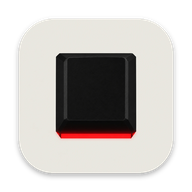
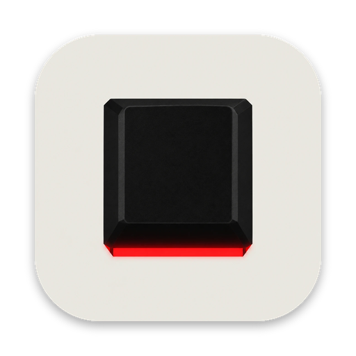

Color per app
Give any app its own color. Zoom red, Xcode blue, OBS green. The whole keyboard switches when that app comes to the front.
[ PER-APP COLOR ]
Tintkey™Tintkey lives in the menu bar. Switch to Zoom and the keyboard goes red. Open Xcode and it goes blue. When an app gets a notification, the keys flash or breathe so you notice without looking at the screen.
Version 0.1.0, 1.1 MB. macOS 13 or later, Apple silicon only. Notarized by Apple. Needs a QMK keyboard with VIA enabled.
A live model of the real thing. Choose the frontmost app and the whole keyboard changes color. Type on your own keyboard to press keys.
Give any app its own color. Zoom red, Xcode blue, OBS green. The whole keyboard switches when that app comes to the front.
[ PER-APP COLOR ]Prefer one color all day? Lock it. It stays put whichever apps open or close, and notifications still show on top.
[ LOCKED ]Choose which apps can light up the keyboard, in what color, flashing or breathing. Then your normal color comes back.
[ ALERTS ]It runs from the menu bar and can open at login. Color changes are live, never saved to your keyboard's memory, and your own lighting returns when you quit.
[ MENU BAR ]macOS doesn't let apps read other apps' notifications. So Tintkey watches the red badge counts on Dock icons instead. When a count goes up, the keys light up.
Open System Settings, Privacy & Security, Accessibility, and switch on Tintkey. Reading Dock badges needs this permission. Per-app colors do not.
Mail, Messages, Slack and any other app with a Dock badge counts. A banner that leaves no badge can't be detected.
The keyboard flashes or breathes in your alert color, then returns to normal. Alerts for the app already in front are skipped. Nothing about the message is read, only the count.
Other tools can trigger an alert too, with a link such as tintkey://alert?app=Slack&style=breathe.
Connect over USB or the 2.4GHz dongle. Tintkey finds a VIA-enabled board on its own.
Choose from your apps, set a color and a notification style. The preview above is how it will look.
Switch apps the way you already do. The lights change with you.
Bluetooth is not supported. macOS does not offer VIA's raw HID channel over Bluetooth.
Yes. Any QMK keyboard with VIA enabled that you connect over USB. Tintkey talks to it the same way the VIA app does.
Yes, if the dongle passes VIA through to your Mac. If the VIA app can see your board through the dongle, so can Tintkey. Bluetooth is not supported.
QMK firmware with VIA support and lighting controls (RGB Matrix, RGB Light or backlight). It was developed on a Keychron V1 Max. Stock firmware that VIA cannot open will not work.
No. Stock VIA sets one color for the whole board, so that is what Tintkey does. The demo above shows the same single color on every key.
No. Color changes are sent as live settings and never saved to the keyboard. Your own lighting comes back when you quit.
Yes, flashing or breathing, in a color you choose per app. It detects Dock badges, so it works for apps that show a badge on their Dock icon. It needs the Accessibility permission, and it reads only the count, never the content.
No. Quit it while Tintkey runs so the two don't fight over the lighting.
Per-app colors need none. Notification alerts need Accessibility so it can read Dock badge counts. Nothing leaves your Mac.
The .dmg is signed with a Developer ID and notarized by Apple, so macOS opens it without a warning.

Download Tintkey.dmgOpen the .dmg, drag the app to Applications, launch it. The icon appears in your menu bar.